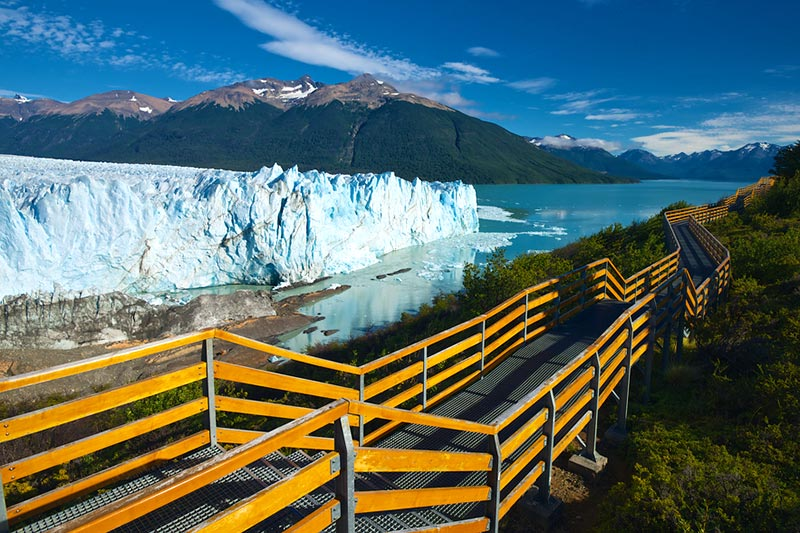
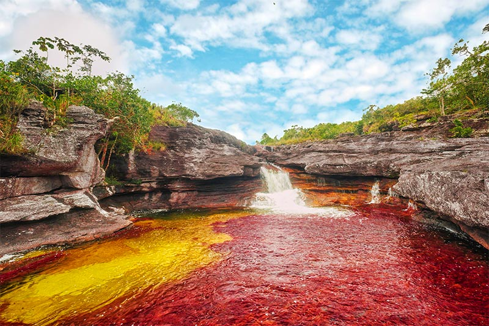
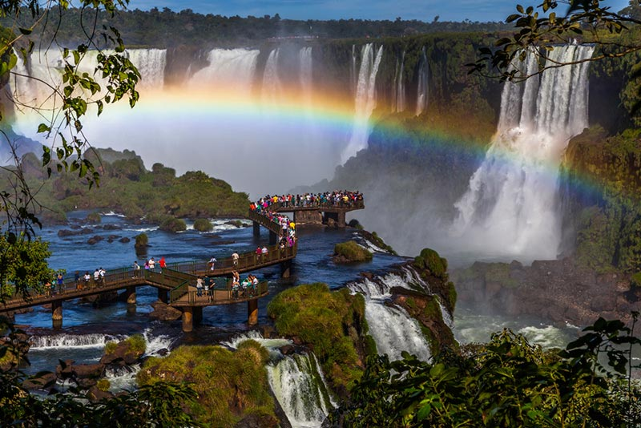
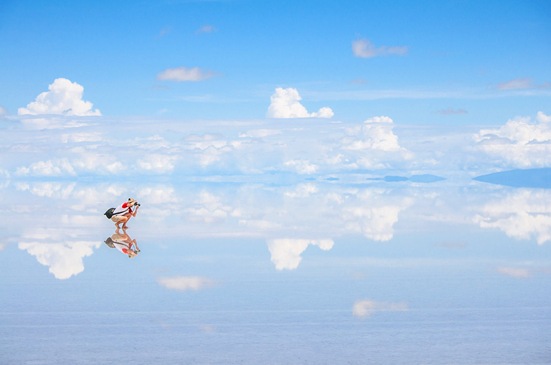

1. PARQUE NACIONAL LOS GLACIARES, ARGENTINA
O Glaciar Perito Moreno é a maior geleira em extensão horizontal do mundo e está em constante mudança, principalmente devido ao aquecimento global. A cidade mais próxima é El Calafate, que tem estrutura turística pros visitantes montarem base para os passeios no parque.
2. CAÑO CRISTALES, COLÔMBIA
Conhecido como “o rio das cinco cores”, está localizado na Serra da Macarena e ganhou fama pelas algas que dão cores a suas águas. Saiba tudo sobre lá.
3. CATARATAS DO IGUAÇU, BRASIL E ARGENTINA
Patrimônio Natural da Humanidade, as cerca de 275 quedas das Cataratas do Iguaçu ficam na fronteira entre o Brasil (Foz do Iguaçu) e Argentina (Puerto Iguazú).
4. SALAR DE UYUNI, BOLÍVIA
Maior planície de sal do mundo, está localizada a mais de 3.600m de altitude, perto da borda da Cordilheira dos Andes.